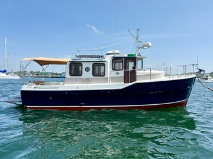

B-Scout Boat Guide · RNGR-R-29
Ranger Tugs R-29 S Sedan
2009–2026
The Ranger Tugs R-29 Sedan is a compact pilothouse cruising boat in Ranger Tugs’ trailerable-to-coastal range. This version is single-diesel and combines an enclosed helm, cruising accommodations and a workboat-inspired profile with systems intended for short-handed recreational cruising.

- Length
- 33 ft
- Beam
- 10 ft
- Draft
- 2.5 ft
- Hull behaviour
- Planing
- Fuel
- Diesel
- Propulsion
- Shaft
- Engine configuration
- Single Inboard
- Boat family
- Tug Cruiser
- Construction
- Fiberglass
Best for
- Couples or small crews wanting a compact, highly equipped pilothouse cruiser
- Owners who value trailerability or manageable marina dimensions where the specific model permits it
- Inland, Great Loop and coastal cruising within the model’s dimensional and operating limits
Trade-offs
- High systems density can make service access tight
- Accommodation volume is achieved within relatively narrow hulls on the trailerable models
- Later outboard and pod-drive versions trade traditional shaft simplicity for speed and maneuverability
Known concerns
- No model-specific concern has been promoted to B-Scout’s evidence threshold. This does not mean the model has no age-, condition- or hull-specific risks.
Inspection focus
- Confirm exact generation, engine package and factory variant from HIN and documentation
- Inspect propulsion, cooling, fuel, steering, thrusters and charging systems
- Test windows, hatches, doors and roof/deck penetrations for leakage
- Verify trailer, bridge-clearance and actual loaded-weight limits where trailering is planned
Continue researching
Related boat models
Ranger Tugs R-29 CB Command Bridge
33 ft · Planing
Ranger Tugs R-27 Current twin-outboard
31.58 ft · Planing
Ranger Tugs R-27 Single-outboard NW/LE
31.58 ft · Planing
Ranger Tugs R-31 CB Command Bridge
34.83 ft · Planing
Ranger Tugs R-31 S Sedan
34.83 ft · Planing
Ranger Tugs R-29 Classic diesel
29 ft · Planing
About this record
B-Scout preserves uncertainty: missing information remains unknown rather than being treated as a negative. Specifications and guidance describe the model record; individual boats can differ by year, equipment, refit and condition.